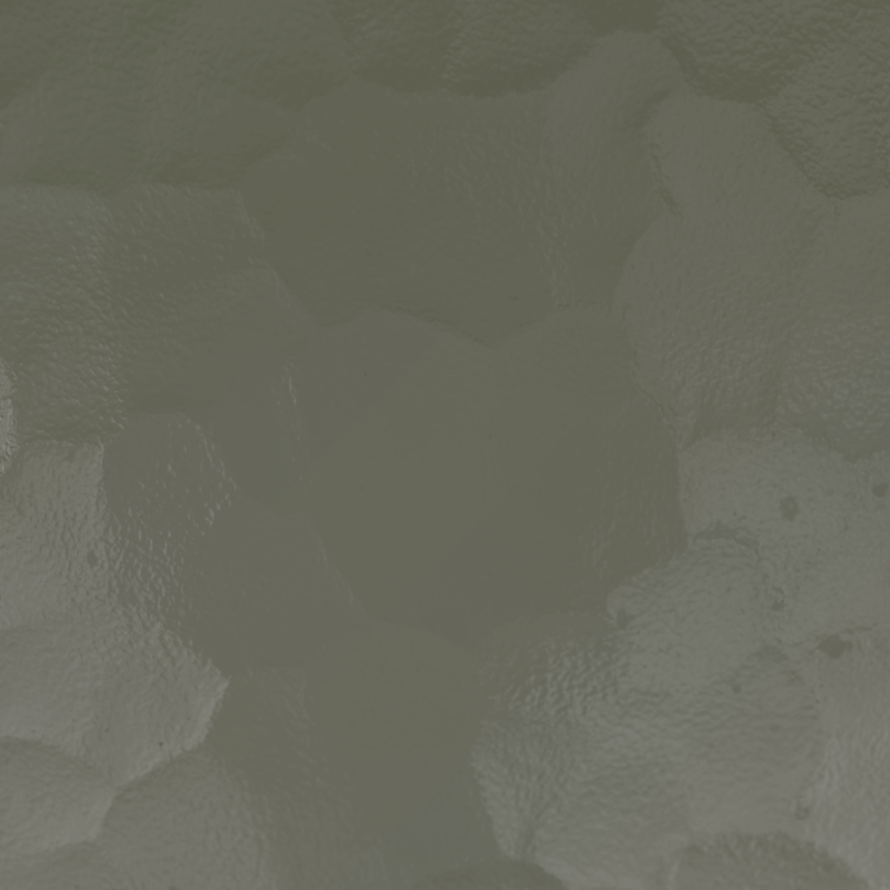

- upload
- history
- settings
© 2024 Plant Doctor AI. Clinical diagnosis guidance.
- 1. Remove affected leaf
- 2. Apply fungicide spray
- 3. Water lightly
Plant Doctor
drop a photo of a sick plant and an AI agent
Severity
Low- Urgency: 2/10

© 2024 Plant Doctor AI. Clinical diagnosis guidance.
drop a photo of a sick plant and an AI agent